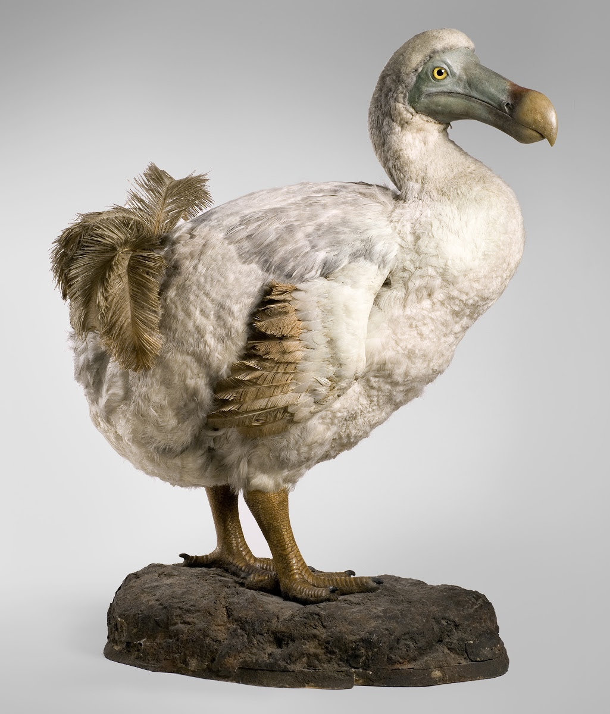
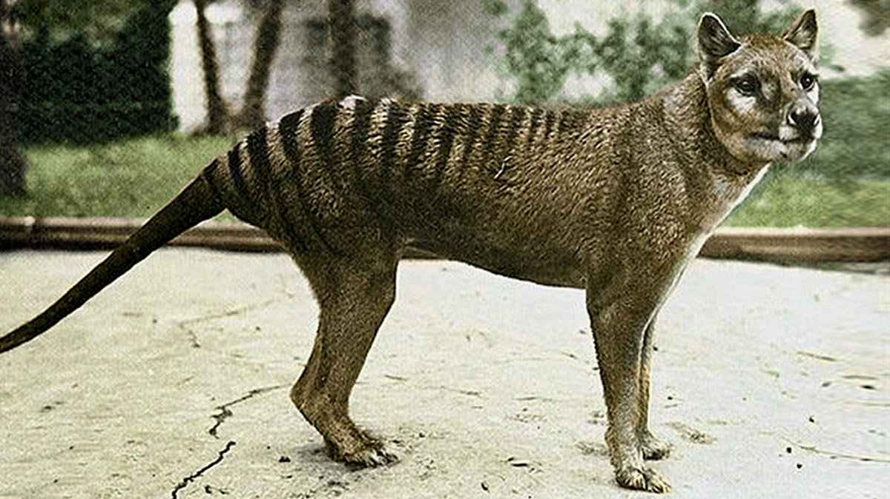

Dodo
Ave dócil e de aparência peculiar cuja extinção foi causada por animais introduzidos por colonos.
Leia mais

Lobo-da-Tasmânia
Incorretamente creditados como matadores de gado e ovelhas, os lobos-da-tasmânia foram duramente caçados por fazendeiros e pelo governo local.
Leia mais